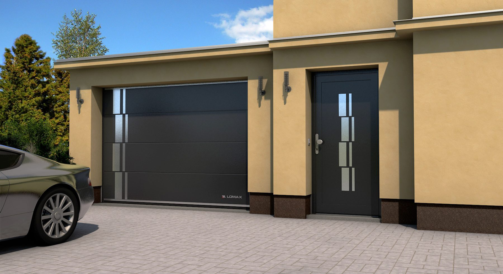
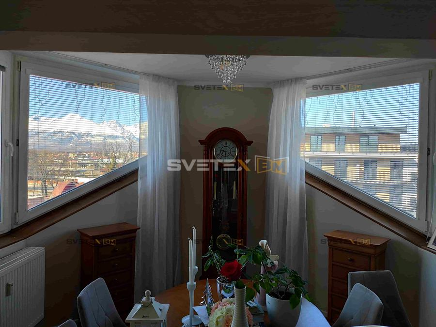
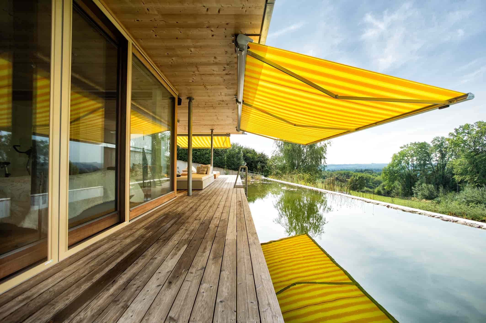

Svetex BM · Poprad · od roku 1993
Brány, okná a tienenie presne na mieru.
Rodinná firma z Popradu. Poradíme, zameriame, namontujeme a postaráme sa aj o servis. Všetko pod jednou strechou.

Rodinná firma od roku 1993
Uzatvárame domy, firmy aj haly. Viac ako 30 rokov.
Od samého začiatku fungujeme ako rodinná firma, ktorá si zakladá na poctivej práci, kvalitných produktoch a individuálnom prístupe. Od prvej konzultácie a návrhu riešenia, cez presné zameranie a profesionálnu montáž až po záručný a najmä pozáručný servis.
Spolupracujeme len s overenými výrobcami z EÚ ako Lomax, Somfy, Velux, RI OKNA či FAAC. Väčšinu produktov si môžete pozrieť a vyskúšať naživo v našom showroome v Poprade.
„Vymeranie brány do existujúceho otvoru na centimeter presne, rýchla komunikácia ohľadom požadovaných zmien. Odporúčam.“
František Garcar, recenzia na Google
Produkty
Desať oblastí, jeden dodávateľ.
Pre rodinné a bytové domy aj priemyselné objekty. Každé riešenie navrhujeme individuálne, podľa otvoru, priestoru a Vašich predstáv.
- {{produkty}}

Tienenie exteriérové
Menej prehriateho domu, viac leta na terase.
Exteriérové žalúzie, rolety, screenové rolety, markízy aj pergoly. Vyrobené na mieru a ovládané aj z mobilu cez SOMFY.
Služby
Od prvej rady po pozáručný servis.
U nás spolupráca montážou nekončí. Celý projekt vedie jeden tím, takže nemusíte nič koordinovať.
- 01
Odborné poradenstvo
Nezáväzná konzultácia v showroome v Poprade. Ukážeme Vám viac variantov, aby sedeli k predstavám aj rozpočtu.
- 02
Profesionálne zameranie
Keď máte vybraté, prídeme a všetko presne zameriame priamo na stavbe.
- 03
Cenová kalkulácia
Transparentná ponuka bez tabuľkových cien. Zohľadní produkt, technické riešenie, doplnky aj rozsah služieb.
- 04
Kvalifikovaná montáž
Náš personál zabezpečí montáž na kľúč. Nemusíte sa starať o nič.
- 05
Servis
Záručný aj pozáručný servis, náhradné diely a odstránenie porúch, aby produkty slúžili dlhé roky.
Galéria realizácií
Naše brány, okná a tienenie v reálnych domoch.
Výber z viac ako 400 fotiek našich zákaziek, od rodinných domov po hasičské zbrojnice a priemyselné haly.
na základe 86 recenzií
„Tím montážnikov je profesionálny a ústretový, ako aj rodinka Bendíkovcov. Dodacia lehota bola síce dlhšia, ale čakanie stálo za to.“
Erika Dulovcová · garážová brána Lomax, vchodové a interiérové dvere
„Ako jeden z najväčších správcov bytových domov v regióne kladieme veľký dôraz na spoľahlivých partnerov. Oceňujeme najmä ich schopnosť rýchlo a efektívne reagovať.“
„Veľká spokojnosť s celkovým prístupom, od prvej komunikácie až po realizáciu. Priateľský prístup majiteľov, ústretovosť pri riešení našich špecifických požiadaviek.“
„So všetkým sme boli veľmi spokojní – od odborného poradenstva až po samotnú realizáciu.“
Partneri
Overení výrobcovia, s ktorými pracujeme roky.
Počas pôsobenia od roku 1993 sme si vybudovali stabilnú sieť dodávateľov prvotriednej kvality.
- Somfypohony a inteligentná domácnosťFrancúzsko
- Lomaxgarážové brány, rolety, žalúzieČesko
- Alfa portaspriemyselné brány, nakladacia technikaČesko
- RI OKNAplastové, hliníkové a drevené oknáČesko
- Veluxstrešné okná a ich tienenieDánsko
- Wo&Womarkízy a slnečná ochranaRakúsko
- Lehainteriérové tienenieRakúsko
- FAACpohony brán a vjazdové systémyTaliansko
Pracujeme aj pre firmy a inštitúcie, napríklad Slovnaft · Východoslovenská energetika · Správa mestských komunikácií Poprad
Výpredaj skladových položiek
Nové výrobky na mieru až o 65 % lacnejšie.
Nadvýroba alebo zmena rozmerov na poslednú chvíľu. Všetko je skladom v Poprade, s možnosťou dovozu aj montáže.
Showroom v Poprade
Príďte si všetko chytiť do ruky.
V showroome v srdci Popradu, s parkovaním priamo pred objektom, nájdete vzorky exteriérového aj interiérového tienenia, drevo-hliníkové okná aj inteligentné riešenia SOMFY. Úvodná konzultácia je nezáväzná.
- Adresa
- Levočská 845/15
058 01 Poprad - Otváracie hodiny
- Po – Pi: 9:00 – 17:00
So – Ne: zatvorené - Telefón
- 0905 363 363
0905 180 055 - info@svetexbm.sk